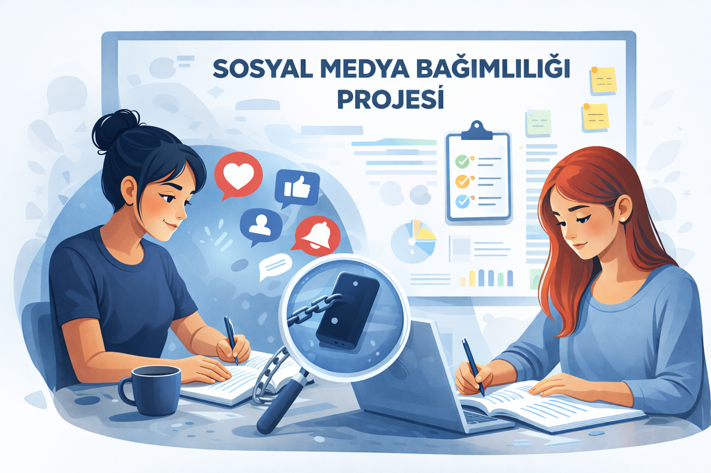

Proje Amacı
Bu platform, günümüzün en büyük sorunlarından biri haline gelen sosyal medya bağımlılığına dikkat çekmek için geliştirilmiştir. Amacımız, özellikle genç yaştaki kullanıcıların ekran sürelerini sorgulamasını sağlamak ve onlara daha kaliteli bir dijital yaşam rehberi sunmaktır.
Anket verilerimizle desteklediğimiz bu çalışma, sadece bir proje değil, aynı zamanda bir sosyal sorumluluk adımıdır.

Proje Ekibi
Bu çalışma iki üniversite öğrencisinin ortak vizyonuyla hayata geçirilmiştir:
Feyza Nur ÖZKUL
ozkulfeyzanur4@gmail.com
Hilal PATLAMAZ
hilal0ptlmz@gmail.com
Tasarım, veri analizi ve içerik yönetimi süreçlerini birlikte yürüterek bu farkındalık platformunu tamamladık.
Bize Ulaşın
Projemiz hakkında sorularınız veya önerileriniz varsa lütfen formu doldurarak bize ulaşın.